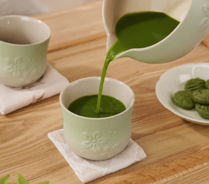
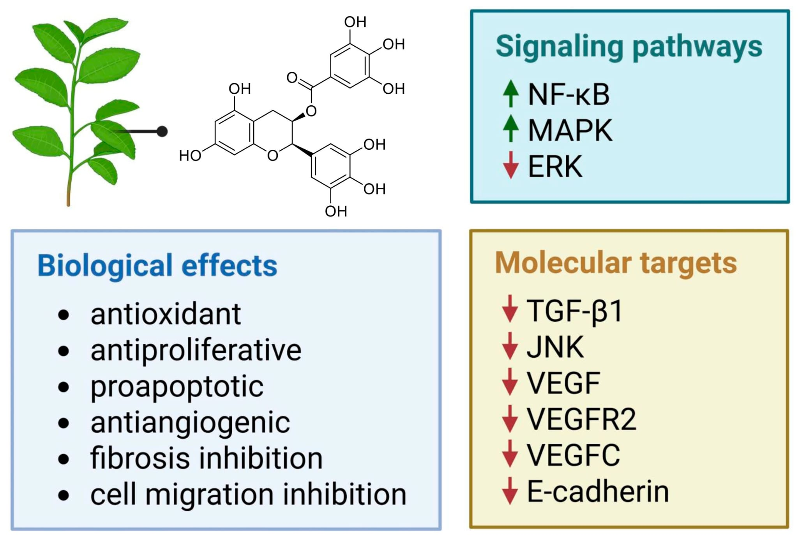

Journal
🎗️Green Tea & Endometriosis: What the Science Is Starting to Show🌿🍵 
Living with endometriosis often means constantly searching for answers beyond pain relief. Recently, I came across a new scientific study exploring the potential role of EGCG, a powerful compound found in green tea, and its effects on endometriosis—and I felt it was worth sharing.
EGCG (epigallocatechin gallate) is known for its anti-inflammatory, antioxidant, and anti-fibrotic properties. According to the most recent research, results from in vitro and animal studies suggest that EGCG may help reduce the number, size, and volume of endometriosis lesions.
Even more interestingly, the study highlights EGCG’s potential ability to prevent fibrosis, a key process involved in disease progression, by influencing multiple molecular factors and signaling pathways.
Inflammation and oxidative stress play a major role in endometriosis, and EGCG appears to act on both. By reducing inflammatory markers and oxidative damage, it may help create an environment less favorable for lesion growth. These findings don’t mean EGCG is a cure—but they do offer promising insight into how natural compounds might support the body when used alongside a broader, holistic approach. 
A commonly studied dose in research is around 800 mg of EGCG per day, typically taken as a supplement (this amount would be difficult to reach through drinking green tea alone).
This kind of studies align deeply with my own journey of finding peace and symptom relief through a holistic approach rather than relying solely on medication.
Living with endometriosis has taught me that hope often comes in small, quiet ways. Sometimes it’s not a miracle cure or a breakthrough treatment—but a study, a plant, a possibility that reminds me we are still learning, still searching, still moving forward.
I’m sharing this not to tell you what to do, but to say this:
You are not imagining things. You are not wrong looking for alternatives and answers. And you are not alone in believing that healing can look different from pain management.
This study doesn’t promise certainty—but it offers hope. And sometimes, hope is exactly what we need to keep going.
📖 Source:
Nutrients Journal (2025) – MDPI
www.mdpi.com/2072-6643/17/13/2068
Carol
Carol
Content for daily logging goes here...
Carol